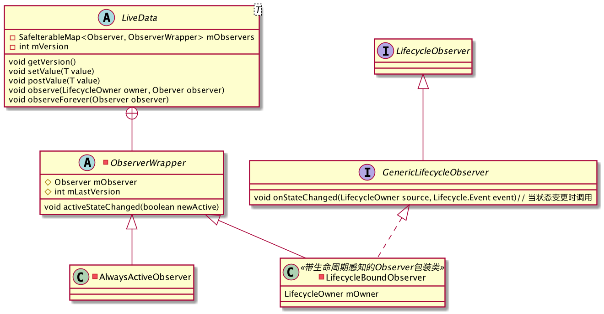

前言
当前市面上, 比较常用的事件总线, 仍然是EventBus和RxBus, 早期我曾经写过EventBus源码解析,这两个框架不论是哪个, 开发者都需要去考虑生命周期的处理.而美团给出了个解决方案, 通过LiveData来实现自带生命周期感知能力的事件总线框架. 本篇我们自己撸一个事件总线框架.
LiveData的原理
我们要用LiveData做事件总线, 总需要知道它是什么, 为什么可以用它来实现事件总线.
LiveData可对数据进行观测, 并具有生命周期感知能力, 这就意味着当liveData只会在生命周期处于活跃(inActive)的状态下才会去执行观测动作, 而他的能力赋予不能脱离LifeCycle的范围.
首先我们可以看下LiveData的UML图, 便于对他有个大概的理解

这里我们需要注意的是,LiveData内维护的mVersion表示的是发送信息的版本,每次发送一次信息, 它都会+1, 而ObserverWrapper内维护的mLastVersion为订阅触发的版本号, 当订阅动作生效的时候, 它的版本号会和发送信息的版本号同步.他们初始值都为-1
订阅
LiveData内部存在一个mObservers用来保存相关绑定的所有观察者, 通过LiveData#observe以及LiveData#oberveForever方法, 我们可以进行订阅动作.如果需要与生命周期绑定, 则需要传入LifecycleOwner对象, 将我们的LiveData数据观测者(Observer)包装注册到生命周期的观测者中, 得以接收到生命周期的变更, 并做出及时的对应更新活动, 我们可以看下LiveData的订阅的方法代码
1
2
3
4
5
6
7
8
9
10
11
12
13
14
15
16
17
18
19
20
21
public void observe(@NonNull LifecycleOwner owner, @NonNull Observer<? super T> observer) {
assertMainThread("observe");
// 当前绑定的组件(activity or fragment)状态为DESTROYED的时候, 则会忽视当前的订阅请求
if (owner.getLifecycle().getCurrentState() == DESTROYED) {
return;
}
// 转为带生命周期感知的观察者包装类
LifecycleBoundObserver wrapper = new LifecycleBoundObserver(owner, observer);
ObserverWrapper existing = mObservers.putIfAbsent(observer, wrapper);
// 对应观察者只能与一个owner绑定
if (existing != null && !existing.isAttachedTo(owner)) {
throw new IllegalArgumentException("Cannot add the same observer"
+ " with different lifecycles");
}
if (existing != null) {
return;
}
// lifecycle注册
owner.getLifecycle().addObserver(wrapper);
}
针对我们需要监测生命周期的观察者, LiveData将其包装成了LifecycleBoundObserver对象, 它继承于ObserverWrapper, 并最终实现了GenericLifecycleObserver接口, 通过实现GenericLifecycleObserver#onStateChanged方法获取到生命周期状态变更事件.
发送信息
LiveData#setValue和LiveData#postValue的区别在于一个是在主线程发送信息, 而post是在子线程发送信息, post最终通过指定主线程的Handler执行调用setValue, 所以这里主要看下LiveData#setValue1
2
3
4
5
6
7
8
9
protected void setValue(T value) {
assertMainThread("setValue");
// 发送版本+1
mVersion++;
mData = value;
// 信息分发
dispatchingValue(null);
}
当调用setValue的时候, 就相当于是LiveData内部维护的可观测数据发生变化, 则直接触发事件分发1
2
3
4
5
6
7
8
9
10
11
12
13
14
15
16
17
18
19
20
21
22
23
24
25
26void dispatchingValue(@Nullable ObserverWrapper initiator) {
// mDispatchingValue的判断主要是为了解决并发调用dispatchingValue的情况
// 当对应数据的观察者在执行的过程中, 如有新的数据变更, 则不会再次通知到观察者
// 所以观察者内的执行不应进行耗时工作
if (mDispatchingValue) {
mDispatchInvalidated = true;
return;
}
mDispatchingValue = true;
do {
mDispatchInvalidated = false;
if (initiator != null) {
considerNotify(initiator);
initiator = null;
} else {
for (Iterator<Map.Entry<Observer<? super T>, ObserverWrapper>> iterator =
mObservers.iteratorWithAdditions(); iterator.hasNext(); ) {
considerNotify(iterator.next().getValue());
if (mDispatchInvalidated) {
break;
}
}
}
} while (mDispatchInvalidated);
mDispatchingValue = false;
}
最终, 会走到considerNotify方法, 在保证观察者活跃, 并且他的订阅生效数小于发送数的情况下, 最终触发到我们实现的观察方法.1
2
3
4
5
6
7
8
9
10
11
12
13
14
15private void considerNotify(ObserverWrapper observer) {
if (!observer.mActive) {
return;
}
if (!observer.shouldBeActive()) {
observer.activeStateChanged(false);
return;
}
if (observer.mLastVersion >= mVersion) {
return;
}
observer.mLastVersion = mVersion;
//noinspection unchecked
observer.mObserver.onChanged((T) mData);
}
要注意的是, LiveData#dispatchingValue除了在我们主动更新数据的时候会触发, 在我们的观察者状态变更(inactive->active)的时候, 也会通知到, 这就导致了LiveData必然支持粘性事件1
2
3
4
5
6
7
8
9
10
11
12
13
14
15
16
17
18
19
20
21
22
23
24
25
26
27
28
29
30
31
32
33
34class LifecycleBoundObserver extends ObserverWrapper implements GenericLifecycleObserver {
public void onStateChanged(LifecycleOwner source, Lifecycle.Event event) {
if (mOwner.getLifecycle().getCurrentState() == DESTROYED) {
removeObserver(mObserver);
return;
}
activeStateChanged(shouldBeActive());
}
}
private abstract class ObserverWrapper {
void activeStateChanged(boolean newActive) {
if (newActive == mActive) {
return;
}
// 当observer的状态从active->inactive, 或者inactive->active的时候走以下流程
mActive = newActive;
boolean wasInactive = LiveData.this.mActiveCount == 0;
LiveData.this.mActiveCount += mActive ? 1 : -1;
if (wasInactive && mActive) {
onActive();
}
if (LiveData.this.mActiveCount == 0 && !mActive) {
// 当前liveData维护的观察者都不活跃, 并且目前的观察者也从active->inactive, 会触发onInactive空方法
// 我们可以覆写onInactive来判断livedata所有观察者失效时候的情况, 比如释放掉一些大内存对象
onInactive();
}
// 当observer是从inactive->active的时候
// 需要通知到观察者
if (mActive) {
dispatchingValue(this);
}
}
}
原理总结
我们概括下来, 关于LiveData可以了解如下:
LiveData的观察者可以联动生命周期, 也可以不联动LiveData的观察者只能与一个LifecycleOwner绑定, 否则会抛出异常- 当观察者的active状态变更的时候
- active->inactive : 如果LiveCycler通知OnDestroy, 则移除对应的观察者, 切当所有观察者都非活跃的状态下时, 会触发onInactive
- inactive->active: 会通知观察者最近的数据更新(粘性消息)
- 除了观察者状态变更时, 会接收到数据更新的通知外, 还有一种就是在活跃的情况下, 通过开发者主动更新数据, 会接收到数据更新的通知.
基于LiveData的事件总线的实现
可以看出, LiveData本身就已经可观测数据更新, 我们通过维护一张eventName-LiveData的哈希表, 就可以得到一个基础的事件总线1
2
3
4
5
6
7
8
9
10
11
12
13
14
15
16
17
18
19
20class LiveDataBus {
internal val liveDatas by lazy { mutableMapOf<String, LiveData<*>>() }
private fun <T>bus(channel: String): LiveData<T>{
return liveDatas.getOrPut(channel){
LiveDataEvent<T>(channel)
} as LiveData<T>
}
fun <T> with(channel: String): LiveData<T>{
return bus(channel)
}
companion object{
private val INSTANCE by lazy { LiveDataBus() }
fun get() = INSTANCE
}
}
但是除了粘性事件以外, 我们还需要非粘性事件的支持, 这里有两种做法.
美团是根据覆写observe方法, 反射获取ObserverWrapper.mLastVersion, 在订阅的时候使得初始化的ObserverWrapper.mLastVersion等于LiveData.mVersion, 使得粘性消息无法通过实现(详细可以看下参考1的文章内容)
这里我用了另外一种做法,粘性消息最终会调到Observer#onChanged, 那么我们就干脆将其再进行一层包装, 内部维护实际的订阅消息数, 来判断是否要触发真正的onChanged方法1
2
3
4
5
6
7
8
9
10
11internal open class ExternalObserverWrapper<T>(val observer: Observer<in T>, val liveData: ExternalLiveData<T>): Observer<T>{
// 新建观察者包装类的时候, 内部实际的version直接等于LiveData的version
private var mLastVersion = liveData.version
override fun onChanged(t: T) {
if(mLastVersion >= liveData.version){
return
}
mLastVersion = liveData.version
observer.onChanged(t)
}
}
我们需要覆写observe方法, 将我们包装的观察者传进去1
2
3
4
5
6
7internal class ExternalLiveData<T>(val key: String) : MutableLiveData<T>(){
override fun observe(owner: LifecycleOwner, observer: Observer<in T>) {
super.observe(owner, ExternalObserverWrapper(observer, this, owner))
}
}
需要注意的是, LiveData维护的观察者集合变为我们包装后的观察者集合后, 那么对应的移除观察者方法, 我们也需要重新包装传入, 并且需要额外维护一份真正的观察者和包装后的观察者的对应hash表对象, 并在观察者被移除的时候删除对应的内存对象, 防止内存泄漏的产生, 最终的代码如下1
2
3
4
5
6
7
8
9
10
11
12
13
14
15
16
17
18
19
20
21
22
23
24
25
26
27
28
29
30
31
32
33
34
35
36
37
38
39
40
41
42
43
44
45
46
47
48
49
50
51
52
53
54
55
56
57
58
59
60
61
62
63
64
65
66
67
68
69
70
71
72
73
74
75
76
77
78
79
80
81
82
83
84
85
86
87
88
89
90
91
92
93
94
95
96
97
98
99
100
101
102
103
104internal class ExternalLiveData<T>(val key: String) : MutableLiveData<T>(){
internal var mObservers = mutableMapOf<Observer<in T>, ExternalObserverWrapper<T>>()
override fun observe(owner: LifecycleOwner, observer: Observer<in T>) {
val exist = mObservers.getOrPut(observer){
LifecycleExternalObserver(observer, this, owner).apply {
mObservers[observer] = this
owner.lifecycle.addObserver(this)
}
}
super.observe(owner, exist)
}
override fun observeForever(observer: Observer<in T>) {
val exist = mObservers.getOrPut(observer){
AlwaysExternalObserver(observer, this).apply { mObservers[observer] = this }
}
super.observeForever(exist)
}
fun observeSticky(owner: LifecycleOwner, observer: Observer<in T>) {
super.observe(owner, observer)
}
fun observeStickyForever(observer: Observer<in T>){
super.observeForever(observer)
}
override fun removeObserver(observer: Observer<in T>) {
val exist = mObservers.remove(observer) ?: observer
super.removeObserver(exist)
}
override fun removeObservers(owner: LifecycleOwner) {
mObservers.iterator().forEach { item->
if(item.value.isAttachedTo(owner)){
mObservers.remove(item.key)
}
}
super.removeObservers(owner)
}
override fun onInactive() {
super.onInactive()
if(!hasObservers()){
// 当对应liveData没有相关的观察者的时候
// 就可以移除掉维护的LiveData
LiveDataBus.get().liveDatas.remove(key)
}
}
}
internal open class ExternalObserverWrapper<T>(val observer: Observer<in T>, val liveData: ExternalLiveData<T>): Observer<T>{
private var mLastVersion = liveData.version
override fun onChanged(t: T) {
if(mLastVersion >= liveData.version){
return
}
mLastVersion = liveData.version
observer.onChanged(t)
}
open fun isAttachedTo(owner: LifecycleOwner) = false
}
/**
* always active 的观察者包装类
* @param T
* @constructor
*/
internal class AlwaysExternalObserver<T>(observer: Observer<in T>, liveData: ExternalLiveData<T>):
ExternalObserverWrapper<T>(observer, liveData)
/**
* 绑定生命周期的观察者包装类
* @param T
* @property owner LifecycleOwner
* @constructor
*/
internal class LifecycleExternalObserver<T>(observer: Observer<in T>, liveData: ExternalLiveData<T>, val owner: LifecycleOwner): ExternalObserverWrapper<T>(
observer,
liveData
), LifecycleObserver{
/**
* 当绑定的lifecycle销毁的时候
* 移除掉内部维护的对应观察者
*/
fun onDestroy(){
liveData.mObservers.remove(observer)
owner.lifecycle.removeObserver(this)
}
override fun isAttachedTo(owner: LifecycleOwner): Boolean {
return owner == this.owner
}
}
事件的约束
正如美团后期讨论的改进文章内所说, 当前的事件总线(不论是EventBus还是LiveEventBus)都没有对事件进行约束, 假如A同学以”event1”字符串定义事件名并发送事件, 而B同学勿写成”eventl”字符串订阅事件, 那么这个事件就永远都接收不到了. 另外当上游删除发送的事件相关代码, 订阅方也无从感知到.
基于此, 参考了Retrofit针对于请求的动态代理的做法, 将事件的定义由事件总线框架本身通过动态代理去实现1
2
3
4
5
6
7
8
9
10
11
12
13
14
15
16
17class LiveDataBus {
fun <E> of(clz: Class<E>): E {
if(!clz.isInterface){
throw IllegalArgumentException("API declarations must be interfaces.")
}
if(0 < clz.interfaces.size){
throw IllegalArgumentException("API interfaces must not extend other interfaces.")
}
return Proxy.newProxyInstance(clz.classLoader, arrayOf(clz), InvocationHandler { _, method, _->
return@InvocationHandler get().with(
// 事件名以集合类名_事件方法名定义
// 以此保证事件的唯一性
"${clz.canonicalName}_${method.name}",
(method.genericReturnType as ParameterizedType).actualTypeArguments[0].javaClass)
}) as E
}
}
开发者需要先定义一个事件, 才可以对它进行相关的发送和订阅的工作.1
2
3
4
5
6
7
8interface LiveEvents {
/**
* 定义一个事件
* @return LiveEventObserver<Boolean> 事件类型
*/
fun event1(): LiveEventObserver<Boolean>
fun event2(): LiveEventObserver<MutableList<String>>
}
然后开发者可以通过以下方式去发送和订阅1
2
3
4
5
6
7
8
9
10
11
12
13
14
15
16
17private fun sendEvent(){
LiveDataBus
.get()
.of(LiveEvents::class.java)
.event1()
.post(true)
}
private fun observe(){
LiveDataBus
.get()
.of(LiveEvents::class.java)
.event1()
.observe(this, Observer {
Log.i(LOG, it.toString())
})
}